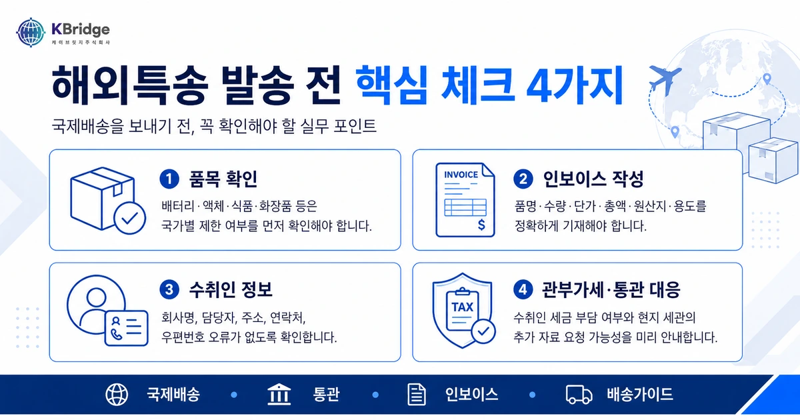

해외특송, 보내기 전에 꼭 확인해야 할 것
“이 물건 해외로 보낼 수 있나요?”라는 질문부터 인보이스 작성, 통관 지연, 관부가세, DHL·FedEx·UPS·EMS 선택까지.
해외특송은 단순히 운송장을 만드는 일이 아니라, 품목·서류·통관·배송 조건을 함께 점검해야 하는 실무입니다.
해외 바이어에게 샘플을 보내야 하는 기업, 해외 전시회·A/S 부품·소량 수출 물품을 발송해야 하는 담당자를 위한 안내입니다.
해외 고객에게 빠르게 물건을 보내야 하지만 통관 서류 작성이 익숙하지 않은 분들도 쉽게 이해할 수 있도록 정리했습니다.
비주얼 카드 | 해외특송 발송 전 핵심 체크

비주얼 카드 | 해외특송 발송 전 핵심 체크 4가지
배터리, 액체류, 식품, 화장품, 의료 관련 품목은 국가별 제한 여부를 먼저 확인해야 합니다.
품명, 수량, 단가, 총액, 원산지, 용도가 정확해야 통관 지연 가능성을 낮출 수 있습니다.
회사명, 담당자명, 연락처, 우편번호가 맞지 않으면 현지 배송과 통관이 멈출 수 있습니다.
수취인 부담 여부와 현지 세관의 추가 자료 요청 가능성을 미리 안내하는 것이 중요합니다.
01해외특송은 ‘빠른 배송’보다 ‘정확한 사전 확인’이 먼저입니다
해외특송은 일반적으로 항공 네트워크를 이용해 빠르게 해외로 물품을 보내는 방식입니다.
하지만 실제 현장에서는 단순히 “며칠 안에 도착하나요?”보다 더 중요한 질문이 있습니다.
케이브릿지는 해외특송을 단순 접수 업무로만 보지 않습니다.
실제로 고객 문의를 받다 보면, 운임보다 먼저 확인해야 할 부분이 “이 품목이 문제 없이 통관될 수 있는가”인 경우가 많습니다.
02해외특송 진행 전 꼭 확인해야 하는 5가지
| 확인 항목 | 왜 중요한가요? | 실무 체크 포인트 |
|---|---|---|
| 품목명 | 통관 심사에서 가장 먼저 보는 정보입니다. | “sample”, “parts”처럼 포괄적인 표현보다 실제 제품명을 구체적으로 작성합니다. |
| 물품 가격 | 관세·부가세 산정의 기준이 됩니다. | 샘플이라도 0원으로 작성하기보다 합리적인 상업가치를 기재하는 것이 안전합니다. |
| 용도 | 판매용, 샘플용, 테스트용, A/S용에 따라 통관 해석이 달라질 수 있습니다. | Commercial Sample, Repair Part, Test Use 등 실제 목적을 명확히 적습니다. |
| 수취인 정보 | 현지 통관·배송 연락에 필요합니다. | 회사명, 담당자명, 전화번호, 이메일, 우편번호를 빠짐없이 확인합니다. |
| 도착국 규정 | 국가별 수입 제한·허가·인증 기준이 다를 수 있습니다. | 식품, 화장품, 배터리, 전자제품, 의료 관련 품목은 사전 확인이 필요합니다. |
고객은 “작은 샘플이라 괜찮겠지”라고 생각하지만, 해외 통관에서는 샘플도 수입 물품입니다. 특히 품명이 불명확하거나 가격이 비정상적으로 낮게 적혀 있으면 세관에서 추가 자료를 요구할 수 있습니다.
비주얼 카드 | 인보이스 작성 핵심 항목
회사명, 주소, 연락처, 담당자 정보를 정확하게 입력해야 배송과 통관이 원활합니다.
막연한 표현보다 실제 제품명을 명확하게 작성해야 세관의 이해를 돕습니다.
가격은 세금 산정의 기준이 되므로 샘플도 합리적인 상업가치로 작성하는 것이 좋습니다.
원산지와 발송 목적, 가능하다면 HS CODE까지 함께 기재하면 통관 해석이 더 명확해집니다.
03인보이스 작성이 해외특송의 핵심입니다
해외특송에서 Commercial Invoice는 단순한 거래명세서가 아닙니다.
현지 세관이 물품의 내용, 가격, 용도, 수입 가능 여부를 판단하는 핵심 서류입니다.
인보이스에 기본적으로 들어가야 할 내용
- Shipper 정보: 발송인 회사명, 주소, 연락처
- Consignee 정보: 수취인 회사명, 주소, 담당자, 연락처
- Item Description: 구체적인 품명
- Quantity: 수량
- Unit Value / Total Value: 단가와 총액
- Country of Origin: 원산지
- Purpose of Export: 샘플, 판매, 테스트, 수리 등 발송 목적
- HS CODE: 가능하면 품목분류 코드 기재
케이브릿지에서는 고객이 보내려는 물품 정보를 확인한 뒤, 인보이스 내용을 함께 점검합니다.
특히 품명 표현이 너무 포괄적이지 않은지, 가격 기재가 비정상적이지 않은지, 용도가 통관상 오해될 여지가 없는지를 중점적으로 봅니다.
04DHL·FedEx·UPS·EMS, 어떤 방식이 좋을까요?
해외특송을 알아보면 DHL, FedEx, UPS, EMS 등 여러 선택지가 있습니다.
중요한 것은 “무조건 가장 싼 운임”이 아니라, 국가·품목·긴급도·통관 난이도에 맞는 운송 방식을 선택하는 것입니다.
| 구분 | 적합한 경우 | 주의할 점 |
|---|---|---|
| DHL / FedEx / UPS | 기업 샘플, 긴급 서류 외 물품, 해외 바이어 발송, 빠른 추적이 필요한 화물 | 품목 제한, 부피무게, 현지 관부가세, 수취인 통관 대응 여부 확인 필요 |
| EMS | 비교적 간단한 소형 물품, 우체국 기반 배송을 선호하는 경우 | 국가별 배송 속도와 추적 품질 차이가 있을 수 있음 |
| 일반 항공화물 | 특송으로 보내기 어려운 중량·대량 화물 또는 별도 포워딩이 필요한 경우 | 수출신고, 항공 스케줄, 현지 통관·운송 조건을 별도로 검토해야 함 |
케이브릿지는 고객의 요청을 들을 때 먼저 “어디로, 무엇을, 왜, 언제까지 보내야 하는지”를 확인합니다.
같은 해외특송이라도 미국으로 보내는 전자부품 샘플, 일본으로 보내는 A/S 부품, 유럽으로 보내는 화장품 샘플은 확인해야 할 기준이 다르기 때문입니다.
비주얼 카드 | 통관 지연이 생기는 대표 이유
“sample”, “parts”처럼 포괄적인 표현만 적으면 세관이 물품 성격을 정확히 파악하기 어렵습니다.
지나치게 낮은 금액은 추가 증빙 요청이나 통관 보류로 이어질 수 있습니다.
연락처, 주소, 우편번호가 부정확하면 현지 통관 및 배송 대응이 지연될 수 있습니다.
배터리, 식품, 화장품, 의료 관련 품목은 국가별 규정에 따라 추가 서류가 필요할 수 있습니다.
05해외특송 진행 절차
- 1단계 | 문의 접수 : 국가, 품목, 수량, 무게, 박스 사이즈, 발송 목적 확인
- 2단계 | 발송 가능 여부 검토 : 제한 품목, 배터리·액체·식품·화학제품 여부 확인
- 3단계 | 운임 및 서비스 선택 : DHL·FedEx·UPS·EMS 등 조건 비교
- 4단계 | 인보이스 작성 지원 : 품명, 가격, 용도, 원산지, HS CODE 점검
- 5단계 | 픽업 및 발송 : 운송장 발행, 픽업 또는 입고 후 발송
- 6단계 | 통관 및 배송 추적 : 현지 통관 이슈 발생 시 필요 서류 확인
해외특송은 발송 후 문제가 생기면 해결하는 데 시간이 걸릴 수 있습니다.
그래서 케이브릿지는 접수 단계에서부터 통관 지연 가능성을 줄이는 방향으로 안내합니다.
06자주 묻는 질문
Q1. 샘플인데 인보이스 금액을 0원으로 작성해도 되나요?
일반적으로 권장하지 않습니다. 샘플이라도 물품 자체의 가치가 있기 때문에, 합리적인 샘플 가치를 기재하는 것이 통관상 안전한 경우가 많습니다.
Q2. 수취인이 세금을 내야 하나요?
대부분의 경우 도착국에서 발생하는 관세·부가세는 수취인에게 청구될 수 있습니다. 다만 거래 조건이나 운송사 서비스 옵션에 따라 발송인 부담 방식이 가능한 경우도 있으므로 사전 확인이 필요합니다.
Q3. 통관에서 멈췄다고 나오면 어떻게 해야 하나요?
통관 보류 사유는 인보이스 보완, 가격 증빙, 용도 확인, 수입자 정보 부족, 품목 규제 등 다양합니다. 이때는 운송장 번호와 통관 메시지를 기준으로 어떤 자료가 필요한지 먼저 확인해야 합니다.
Q4. 개인 물품과 기업 발송은 다르게 봐야 하나요?
네. 개인 해외직구·개인 발송과 기업 샘플·판매용 물품은 통관 목적과 증빙 방식이 달라질 수 있습니다. 특히 기업 발송은 인보이스, 사업자 정보, 거래 목적, HS CODE 확인이 더 중요합니다.
07케이브릿지가 해외특송에서 중요하게 보는 기준
해외특송 문의를 받다 보면 고객이 가장 궁금해하는 것은 보통 운임과 배송일입니다.
하지만 실제로는 운임보다 먼저 확인해야 할 것이 있습니다.
케이브릿지의 해외특송 서비스는 단순히 “운송장만 발행하는 서비스”가 아닙니다.
고객이 놓치기 쉬운 통관 리스크를 먼저 확인하고, 물품의 성격에 맞는 발송 방법을 제안하는 것이 핵심입니다.